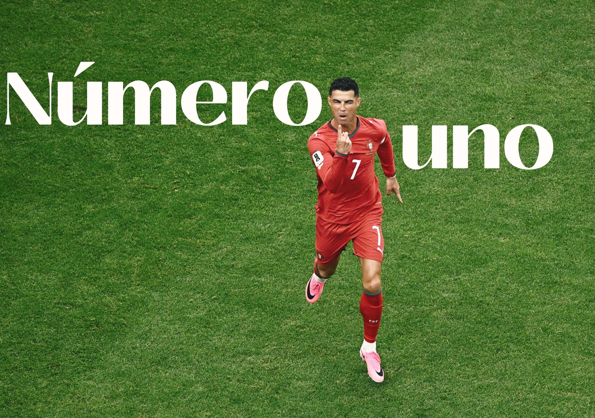
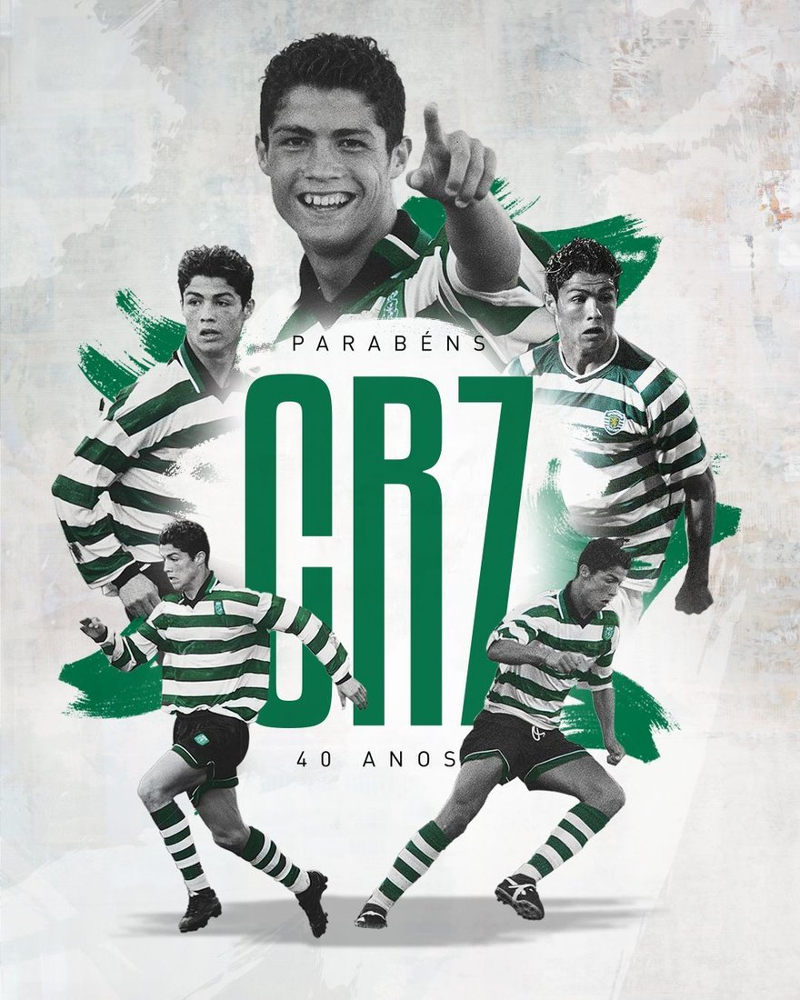
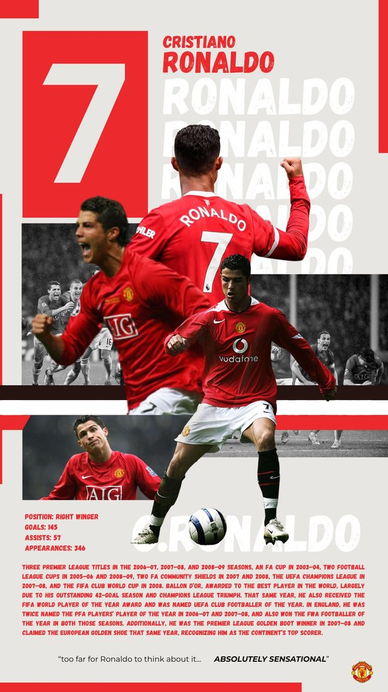
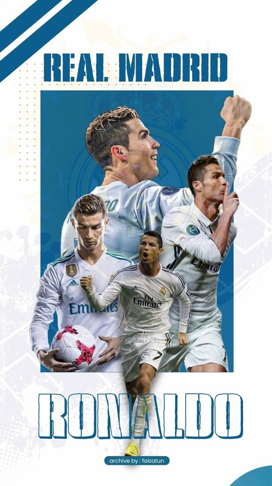
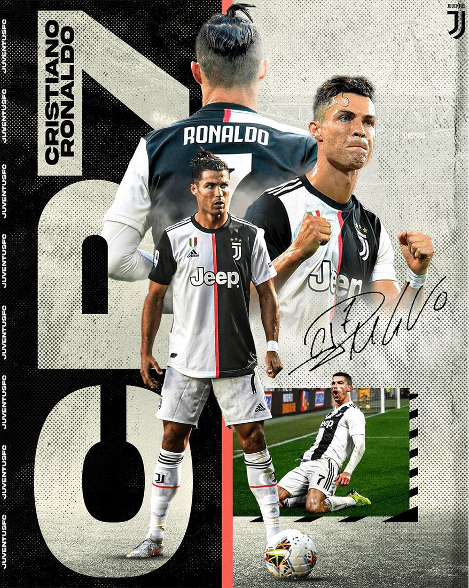
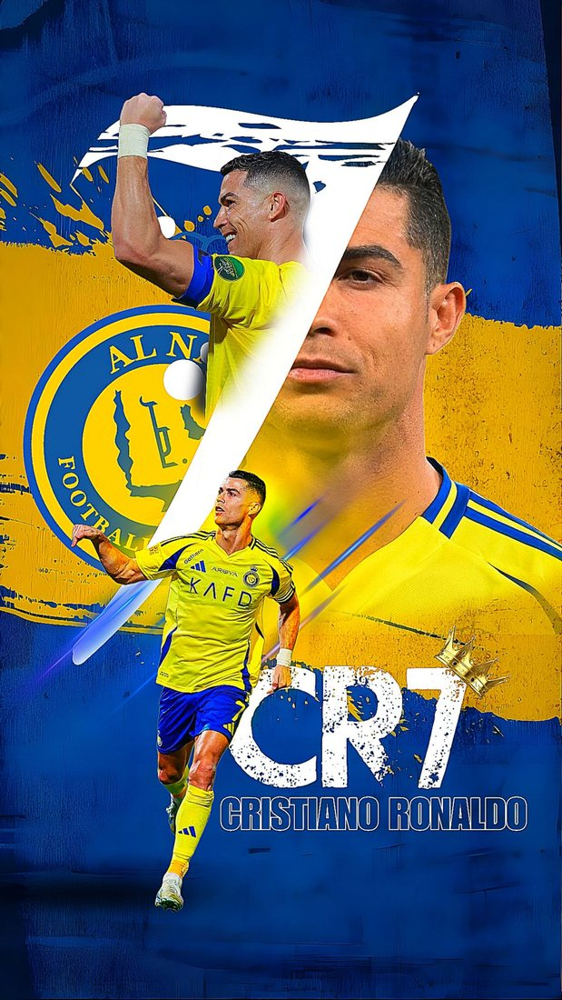
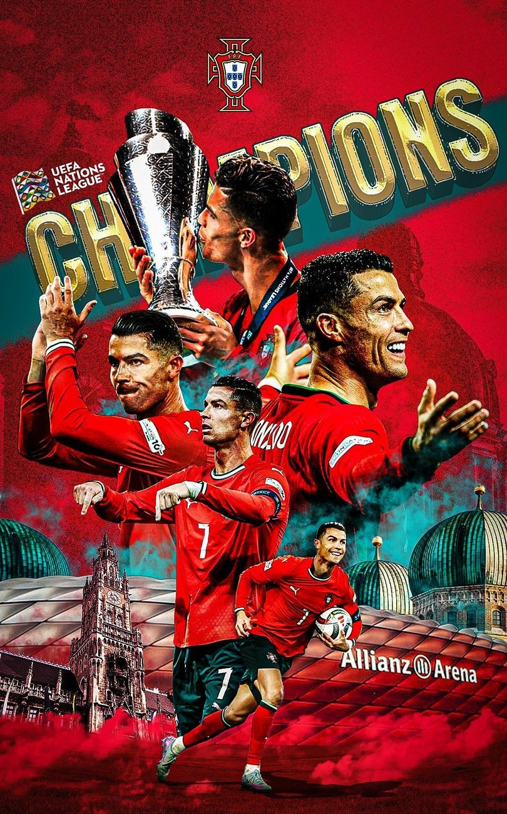
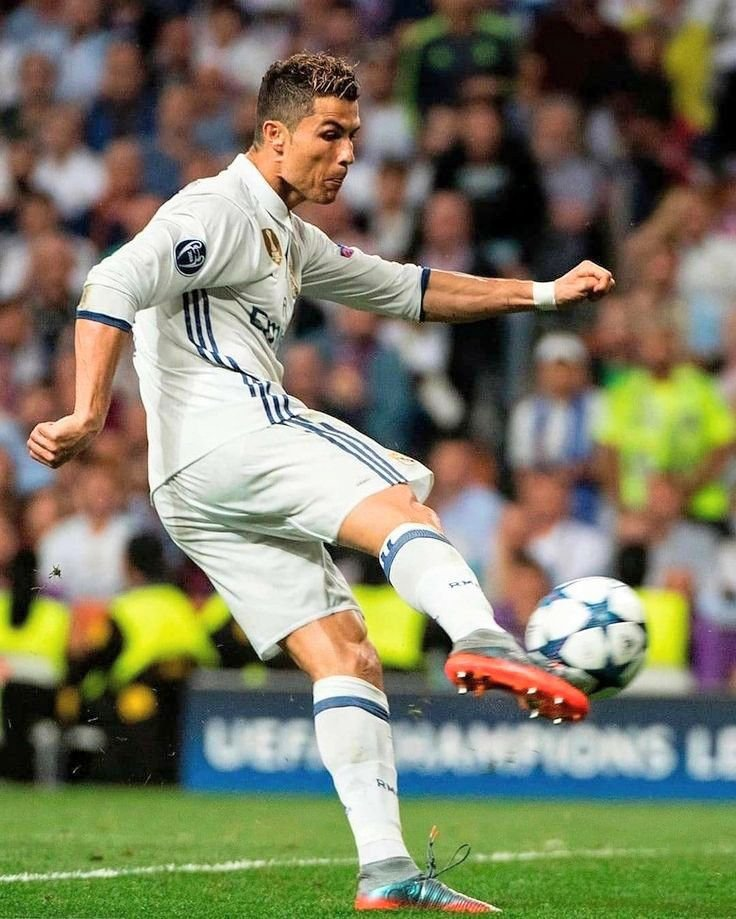
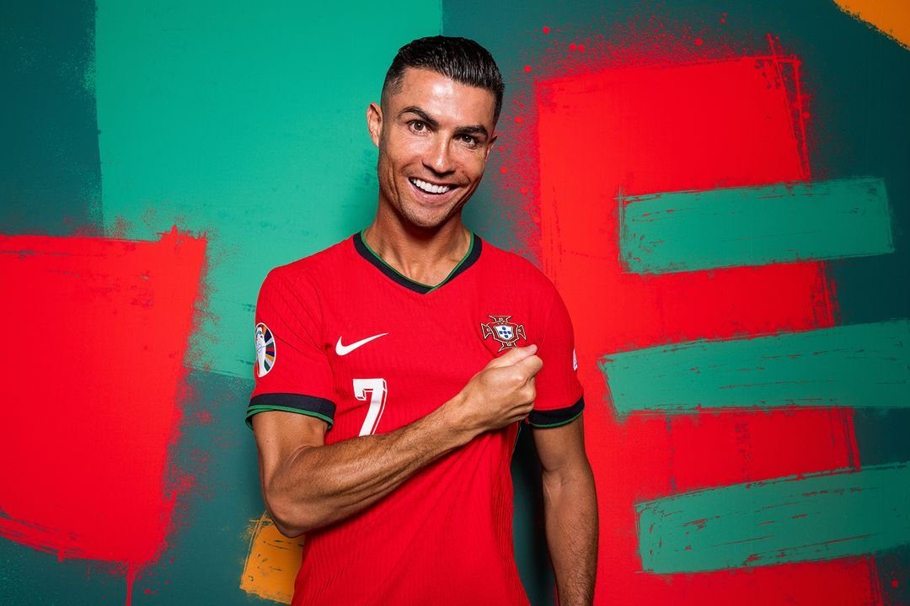

The 973 Breakdown
Every goal, club by club — the full split behind the all-time tally.

Five clubs. Two decades. One relentless pursuit of greatness — from a teenager in Lisbon to the all-time king of goals.
Every era told in its own colours — the clubs that shaped a legend, and the trophies that defined him.
The legend was born at the Estádio José Alvalade. A lightning-quick teenager lit up Lisbon — and one pre-season friendly against Manchester United in August 2003 changed football forever. Sir Alex Ferguson signed him on the spot.


Six seasons that forged a raw winger into the best player on earth. Cristiano claimed three Premier League titles, the 2008 Champions League, and his first Ballon d'Or — making the iconic No. 7 shirt his own at the Theatre of Dreams.
Nine years of total dominance. 450 goals — more than any player in the club's 120-year history — four Champions League crowns including three in a row, and four Ballons d'Or. The greatest era of an already legendary career.


Cristiano conquered a third country, becoming the first player ever to win the league title and finish top scorer in England, Spain and Italy. Two Serie A crowns in the famous black and white of the Bianconeri — and 101 goals in 134 games.
A new era in Riyadh — and the records keep tumbling. Cristiano became the Saudi Pro League's record scorer and top marksman, powering Al Nassr while closing in on the once-unthinkable milestone of 1,000 career goals.


The all-time top scorer in men's international football and the most-capped player in the history of the game. Cristiano captained Portugal to UEFA Euro 2016 and two UEFA Nations League titles — the proudest chapters in the nation's footballing story.

Not only the greatest goalscorer of all time — a relentless creator too. Nearly 300 career assists, laid on for team-mates at every club and country.

Two decades at the summit of world football — the trophies, the records, and the numbers that may never be matched.
An exclusive members area is on the way — the full goal breakdown, untold records, and a members-only highlight reel. Check back shortly.
Every goal, club by club — the full split behind the all-time tally.
The records that never make the headlines but cement the GOAT status.
A hand-picked highlight set, just for the inner circle.
The complete collection — every photo, two decades of greatness in one place. Click any image to view it full size.